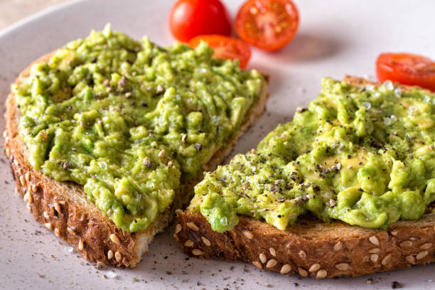
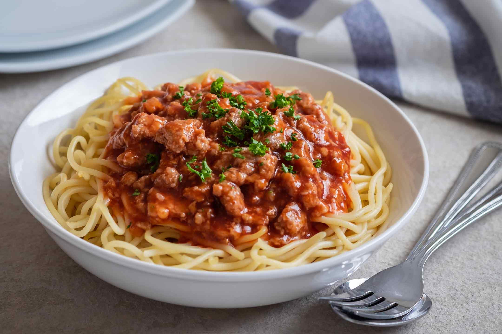
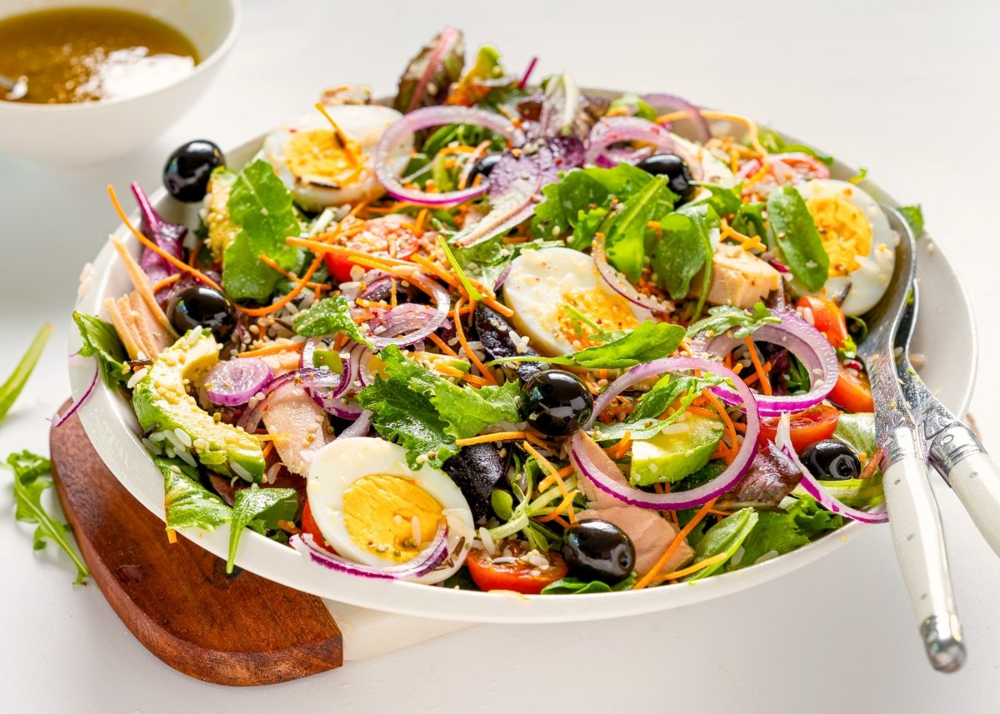

Receta 1

Pasos
- Tostar dos rebanadas de pan.
- Pisar una palta con sal y limón.
- Untar la palta sobre el pan.
- Agregar tomate, huevo o semillas a gusto.
Receta 2

Pasos
- Hervir agua con sal en una olla.
- Cocinar los fideos hasta que estén al dente.
- Preparar una salsa con tomate, ajo y condimentos.
- Mezclar los fideos con la salsa y servir.
Receta 3

Pasos
- Lavar lechuga, tomate y zanahoria.
- Cortar las verduras en trozos pequeños.
- Agregar huevo duro, arroz o pollo.
- Condimentar con aceite, sal y limón.